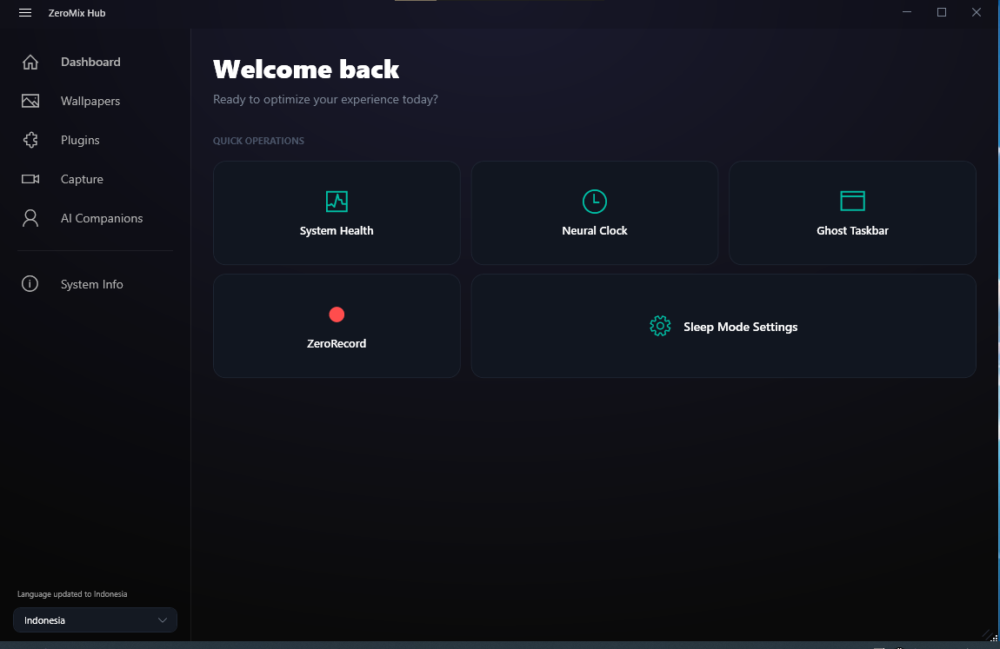
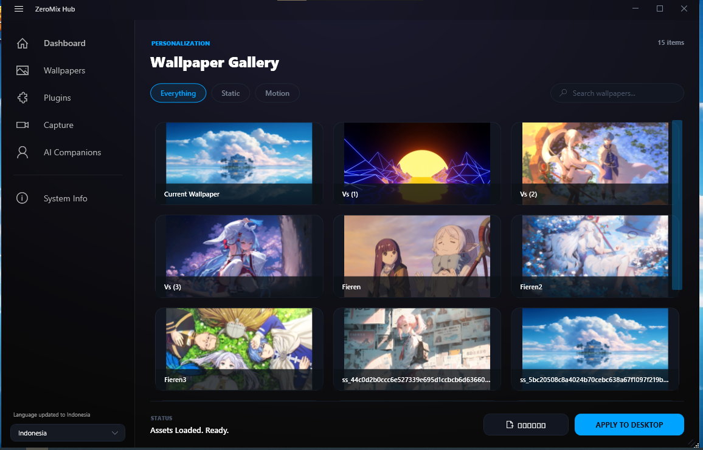
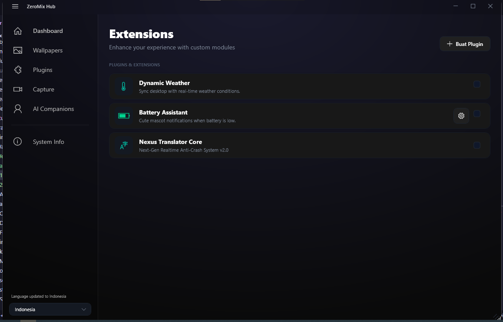
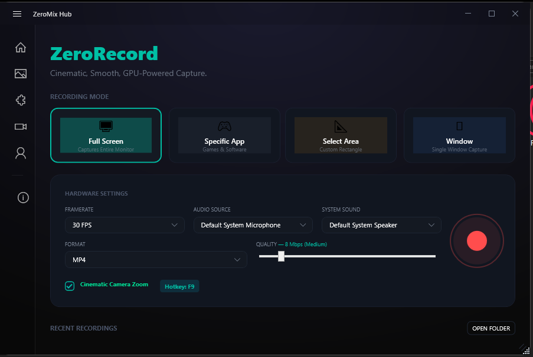
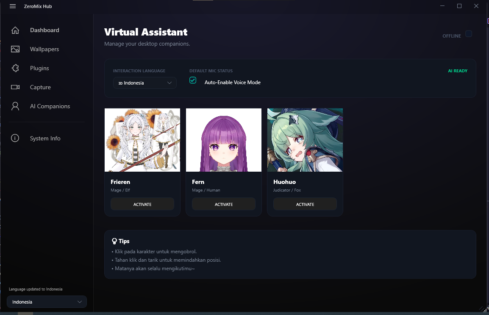
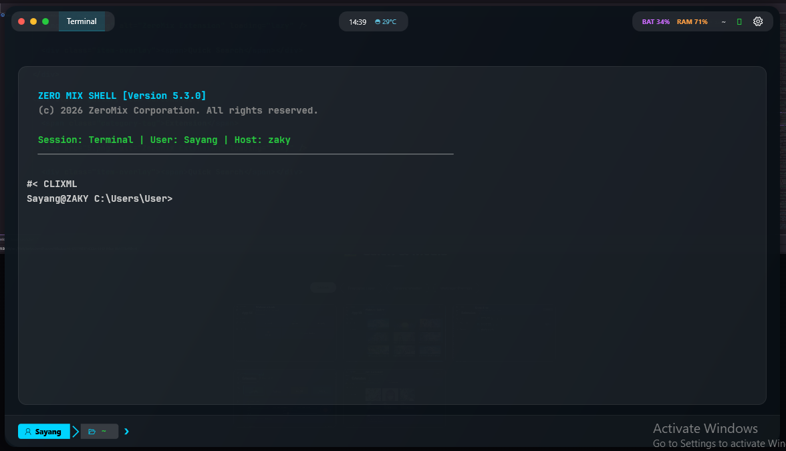

ZeroMix
Selamat Datang di Website Resmi ZeroMix
Aplikasi Desktop & Extension untuk Produktivitas Tanpa Batas 🚀
Selamat Datang di Website Resmi ZeroMix
Aplikasi Desktop & Extension untuk Produktivitas Tanpa Batas 🚀
Buka overlay ala Spotlight dengan Alt+Space untuk akses instan ke aplikasi favorit Anda.
Kombinasi saran aplikasi lokal (Start Menu/Desktop) dan saran Google secara real-time.
Buat hotkey kustom untuk aplikasi favorit. Tersimpan di %AppData% dan aktif tanpa restart.
Ikon tray dengan Dashboard CPU/RAM dan tombol pembersih file sementara.
Cek rilis GitHub, unduh installer, dan update senyap ketika Anda setuju.
Popup pencarian cepat di Chrome/Edge/Opera dengan saran Google. Kirim Feedback
Tanpa biaya berlangganan atau fitur premium tersembunyi. Selamanya gratis dan open source.
Shortcut & workflow yang dapat disesuaikan dengan kebutuhan Anda tanpa restart.
Sinkronisasi seamless antara aplikasi desktop dan browser extension Anda.
iwr -useb bit.ly/ZeroMix | iex






Tekan Alt+Space untuk membuka overlay pencarian
ZeroMix. Ketik nama aplikasi yang ingin Anda buka atau query
pencarian untuk mencari di Google. Pilih hasil dengan keyboard
atau mouse, lalu tekan Enter untuk eksekusi.
Ya! ZeroMix sepenuhnya gratis dan open source. Tidak ada biaya berlangganan, iklan, atau fitur premium yang tersembunyi. Kami berkomitmen untuk memberikan tool produktivitas terbaik kepada semua orang.
Semua data Anda disimpan secara lokal di folder
%AppData%/ZeroMix. Kami tidak mengirim data Anda ke
server manapun. Anda memiliki kontrol penuh atas data pribadi
Anda.
Buka ZeroMix dan cari menu "Custom Shortcut". Klik tambah shortcut baru, tentukan hotkey yang diinginkan, dan pilih aplikasi target. Shortcut akan langsung aktif tanpa perlu restart aplikasi.
Saat ini ZeroMix tersedia untuk Windows 10/11 sebagai aplikasi desktop dan sebagai browser extension (Chrome, Edge, Opera). Tidak ada rencana untuk platform lain saat ini, tapi kami terbuka untuk saran.
Buka halaman GitHub Issues kami dan klik "New Issue". Berikan deskripsi detail tentang bug, langkah-langkah untuk mereproduksi, dan informasi sistem Anda. Semakin detail, semakin baik!
Model asisten virtual:
Frieren & Fern diciptakan oleh
kyokiStudio (Booth.pm).
Huohuo diciptakan oleh
bailyovo (Booth.pm).
Jika ingin mendownload model, harap gunakan situs resmi yang telah kami sediakan (Kunjungi link Booth di atas).
Mohon hargai kerja keras pembuat model. Jangan menggunakan model ini untuk komersial atau dijual kembali tanpa izin. Terima kasih atas pengertiannya! 🥰
📩 Kebijakan Penghapusan:
Jika Model ini tidak boleh digunakan dalam aplikasi, mohon hubungi kami melalui Email: Rozakadm@gmail.com untuk permintaan penghapusan model Live2D tersebut. Hal ini kami lakukan agar aplikasi tetap aman dan nyaman bagi pengguna serta menghormati hak pemilik model Live2D. Terima kasih.
⚠️ Peringatan: Jika Anda tetap menggunakan model ini dengan cara yang melanggar ketentuan, kami tidak bertanggung jawab atas segala konsekuensi yang mungkin terjadi.
Jangan ragu untuk menghubungi kami. Tim kami siap membantu Anda kapan saja!